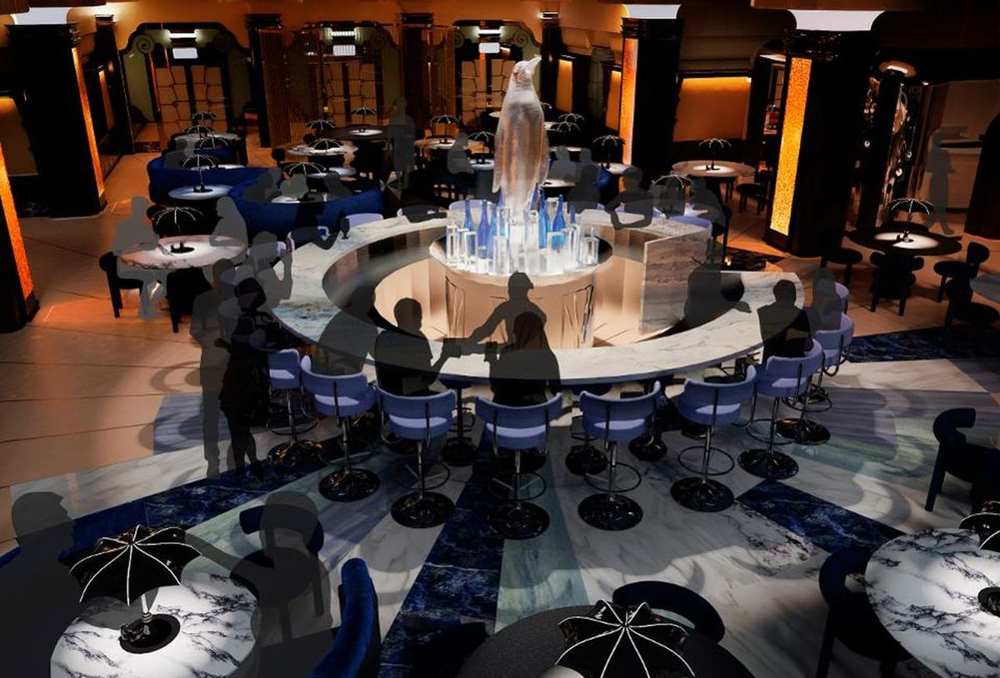

Om Moon Burgers
Vi på Moon Burgers har stora ambitioner för dem som vill gå bortom sunda
upplevelser på jorden och
istället eftersträva en oerhört rymdlig skildring från verkligheten
som utan tvekan kommer skapa historia för hela världen
Vår mat
Maten som vi serverar här på Moon Burgers är inte som vilken annan hamburgare som helst. Innan
vi bjuder in våra gäster till rymdraketen som ska flyga till månen så är vi väldigt noga med att
förbereda alla råvaror och lagra allt så effektivt som möjligt så att kötten och ingredienserna håller
sig så frächst som möjligt. Restaurangen har en kogård på månbasen där korna får sväva fritt i tyngdlösheten
medan de blir matade med särskilt odlat rymd majs. Detta ger korna mycket energi med konsistent
vikt ökning och marmorering så att köttet får en god och jämn smak vid tillagning. På restaurangen
så kommer vi erbjuda tre rätter under dessa 8 timmar som ni vistas på månen: förrätt, huvudrätt och efterrätt där
du som gäst kan välja bland ett stort utbud av produkter och drinkar.

Upplevelser
Hos oss på Moon Burgers så kommer du få en upplevelse som du aldrig kommer att glömma.
Efter träningen som ges några timmar innan uppstarten så kommer du nu vara redo att åka ut i jordens
atmosfär och tillbringa cirka 3 dagar ute i rymden på farkosten.
I raketen så kommer vi erbjuda
murphy sängar, frystorkad mat, pulver drycker, träning (för de som vill), lekar, visning av
utrustning som astronauterna använder och mycket mer. På restaurangen inleder vi med 3 rätters måltider
samt en stor variation av olika drycker. Efter maten så kommer vi också kunna erbjuda casino,
sightsing på månen och uppträdanden av våra profesionella dansare medan du har en enastående
vy över jorden
Hur går detta till?
Strömförsörjning
Kanske en av de viktigaste frågorna som vi måste ställa oss är hur tillförser vi elektricitet för
hela restaurangen dygnet runt? Månen roterar var 28:e dag, det betyder att en rymdstation i en fast position på månen
skulle vara i solen i 14 dagar och sedan mörker i 14 dagar. Utan ljus så skulle soldriven utrustning inte fungera utan
en stor förbättring av batteri lagringen.
Vi har löst detta problem genom att utrusta våra självbyggda solceller norr
om månen för att de ska kunna få konstant solljus och inte blockeras av planeten alls. Vi har även insett att de extrema
temperaturförändringarna på månen kommer vara ett långvarigt problem för cellerna och batterierna. Därför har vi byggt
ett stort växthus av kvartsglas som ska omsluta cellerna och skydda från höga/låga temperaturer samtidigt som de kan
få sol.
Förberedelse
Inför resan så kanske du tänker “jag har aldrig åkt rymdraket förut hur ska jag förbereda
mig”. Du behöver inte oroa dig, vi har starka kontakter med professionella astronauter som kommer vägleda dig genom
ett träningsprogram som inträffar 6 timmar innan uppstart med de andra passagerarna som också åker. Programmet
innefattar både virtuella och fysiska anläggningar som inkluderar förberedelse för mikrogravitations miljön,
medicinska tester och fysiskt träning för extra fordons aktivitet. Tid och destination får ni efter bordsbokning
till ert utsedda mejl.
Det kravet vi ställer för att få åtkomst till träningsprogrammet är att du är fysiskt och psykiskt frisk, har fyllt 18 år och inte har något i brottsregistret.
Hitta oss